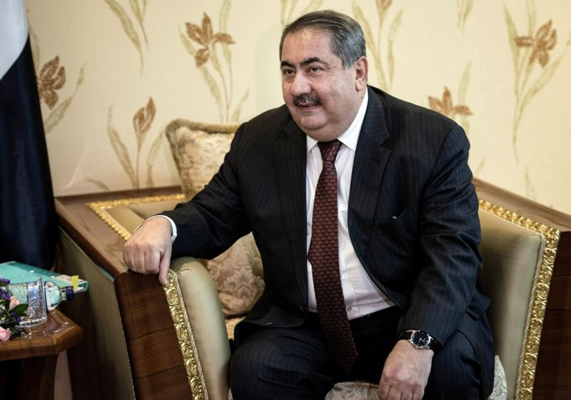
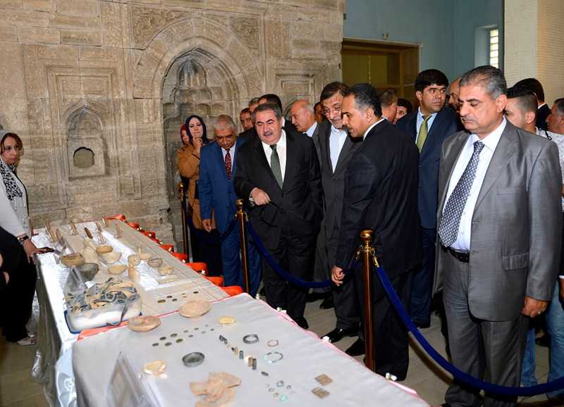
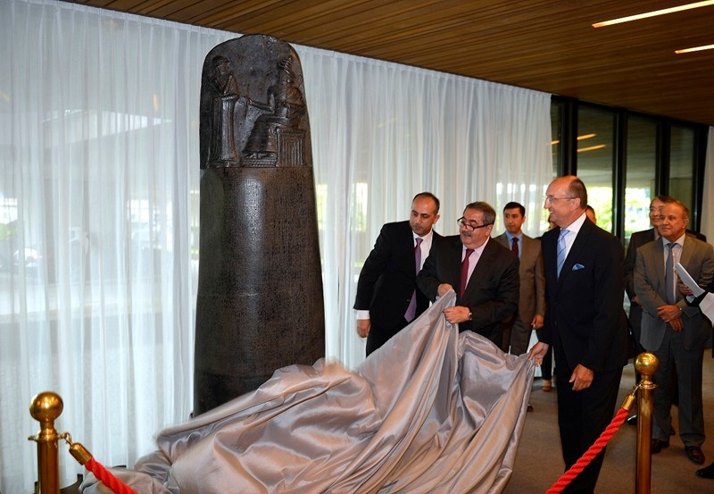
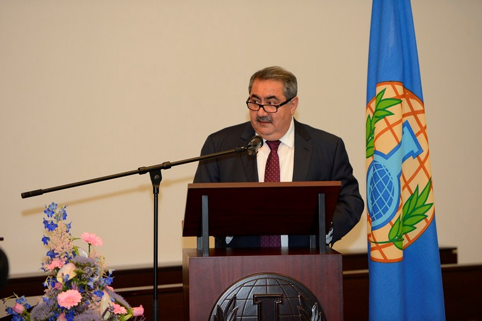
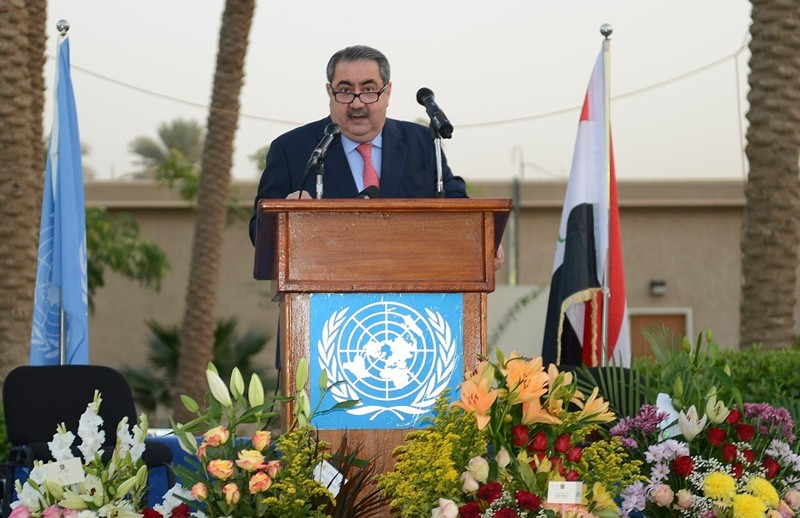
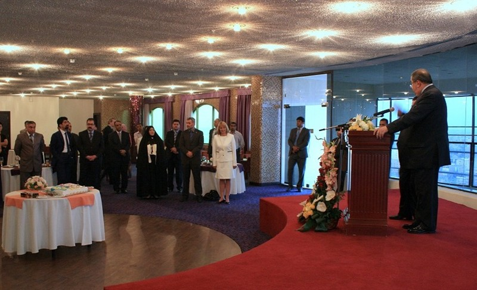

Foreign Minister Zebari
'Iraq Is Facing a Mortal Threat'
Interview Conducted By Bernhard Zand
On June 30 2014
In an interview, Iraqi Foreign Minister Hoshyar Zebari, a Kurd, warns that his country is threatened with collapse under the pressure posed by ISIS terrorists. But, he says, it isn't a civil war yet. >>>Read More

|

Speech of the Foreign Minister in the Ceremony of Delivering Historical Pieces to the Iraqi National Museum
It is a pleasure today to celebrate delivering the Iraqi National Museum, Iraqi historical pieces that were recovered from some countries, and it is a honor for us to restore the Iraqi antiquities that have been stolen or smuggled, for they represents a legacy of civilization that Iraq is privileged with since the emergence of humanity. >>>Read More
|

Speech by H. E. Hoshyar Zebari, Minister of Foreign Affairs on the occasion of unveiling of a replica of the obelisk of Hammurabi at the Headquarters of the International Court of Justice
Speech by H. E. Hoshyar Zebari, Minister of Foreign Affairs on the occasion of unveiling of a replica of the obelisk of Hammurabi at the Headquarters of the International Court of Justice >>>Read More
|

Speech of H.E. Hoshyar Zebari Foreign Minister of the Republic of Iraq before the OPCW
Speech of H.E. Hoshyar Zebari Foreign Minister of the Republic of Iraq before the OPCW >>>Read More
|
Essay of Foreign Minister Hoshyar Zebari on March 20, 2014 titled: The role of the Iraqi Foreign Ministry in supporting the upcoming legislative elections
The role of the Iraqi Foreign Ministry in supporting the upcoming legislative elections >>>Read More
|
Speech of the Delegation of the Republic of Iraq delivered by HE Mr. Hoshyar Zebari, Minister of Foreign Affairs at Geneva 2 International Conference on Syria
Speech of the Delegation of the Republic of Iraq delivered by HE Mr. Hoshyar Zebari, Minister of Foreign Affairs at Geneva 2 International Conference on Syria >>>Read More
|
An Article Written by Minister of Foreign Affairs Published in (CTBTO) Spectrum, Magazine Issue 20 July 2013
The CTBT:
One of the
most important
international
instruments
voices >>>Read More
|
Speech of His Excellency Hoshyar Zebari, Minister of Foreign Affairs of the Republic of Iraq at the US Chamber of Commerce
His Excellency Hoshyar Zebari,
Minister of Foreign Affairs of the Republic of Iraq
US Chamber of Commerce
October 30, 2013 >>>Read More
|

Statement by
H.E. Hoshyar Zebari
Foreign Minister of the
Republic of Iraq
on 28/10/2013
Excellency’s,
Distinguished guests,
Ladies and gentlemen, >>>Read More
|
Statement delivered
By
H.E Hoshyar Zebari
Minister of Foreign Affairs of the Republic of Iraq
Before Conference on Facilitating the Entry into Force of the Comprehensive Nuclear-Test-Ban treaty (CTBT)
Statement delivered
By
H.E Hoshyar Zebari
Minister of Foreign Affairs of the Republic of Iraq
Before Conference on Facilitating the Entry into Force of the Comprehensive Nuclear-Test-Ban treaty (CTBT) >>>Read More
|
Statement delivered
By
H.E Hoshyar Zebari
Minister of Foreign Affairs of the Republic of Iraq
Before
High-Level- Meeting of the General Assembly
On Nuclear Disarmament
Statement delivered
By
H.E Hoshyar Zebari
Minister of Foreign Affairs of the Republic of Iraq
Before
High-Level- Meeting of the General Assembly
On Nuclear Disarmament >>>Read More
|
Statement of H. E. Hoshyar Zebari, Minister of Foreign Affairs of the Republic of Iraq in the Ministerial Meeting of the Refugee-Hosting
Countries Bordering the Syrian Arab Republic
Statement of H. E. Hoshyar Zebari
Minister of Foreign Affairs
Republic of Iraq
Ministerial meeting of the refugee-hosting
Countries bordering the Syrian Arab Republic >>>Read More
|
Foreign Minister Hoshyar Zebari's Speech in the Meeting of the Security Council on Chapter VII on June 27, 2013
Foreign Minister Hoshyar Zebari's Speech in the Meeting of the Security Council on Chapter VII on June 27, 2013 >>>Read More
|
Republic of Iraq Speech in the International Disarmament Conference
Republic of Iraq Speech in the International Disarmament Conference >>>Read More
|

Speech of the Minister of Foreign Affairs on the occasion of Europe Day celebration in Baghdad on May 9, 2013
Speech of the Minister of Foreign Affairs on the occasion of Europe Day celebration in Baghdad on May 9, 2013 >>>Read More
|